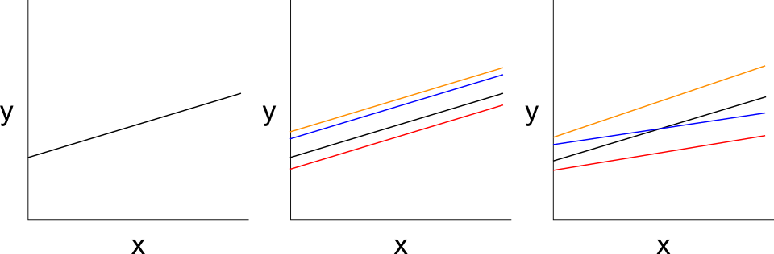

Gewichtung mit R
Grundlagen und Umsetzung
Gewichtung in R
Dies ist das Skript zur Videoserie Gewichtung in R, die für die Stelle “Quantitative Methoden” der FernUni Hagen entstanden ist.
Diese Videoserie besteht aus sechs aufeinander aufbauenden Teilen:
- Teil 1: Was ist eine Mehrebenenregression? [ Video (18 Min.) ]
- Teil 2: Wann ist eine Mehrebenenregression angebracht? [ Video (31 Min.) ]
- Teil 3: Wie werden die Daten für eine Mehrebenregression vorbereitet? [ Video (19 Min.) ]
- Teil 4: Wie schätzt man eine Mehrebenenregression in R? [ Video (23 Min.) ]
- Teil 5: Wie schätzt man variierende Slopes und Cross-Level Interaktionen? [ Video (27 Min.) ]
- Teil 6: Wie lassen sich die Ergebnisse einer Mehrebenregression berichten? [Video (18 Min.) ]
Zu allen Videos gibt es auf dieser Seite den R Code, sowie das Skript.
Die Kurzfassung

Voraussetzungen
Damit Sie den Inhalten folgen können, sollten Sie über Grundlagen in sozialwissenschaftlichen Methoden, insbesondere Stichprobenziehung und Umfragemethoden verfügen. Außerdem sollten Sie Vorkenntnisse zur linearen OLS Regression haben, sowie Grundlagen in R beherrschen.
Zielgruppe
BA oder MA Studierende aus Wirtschafts- und Sozialwissenschaften, Psychologie oder Digital Humanities, mit Vorkenntnissen in quantitativen Methoden (Grundlagen in R und in multivariater Statistik, z.B. OLS Regression).
Literatur zum Einstieg
- Tausendpfund, Markus (2020): Mehrebenenanalyse. In: ebd. (Hrsg.): Fortgeschrittene Analyseverfahren in den Sozialwissenschaften. Grundwissen Politik. Springer VS, Wiesbaden. https://doi.org/10.1007/978-3-658-30237-5_5
- Pötschke, Manuela. (2020). Mehrebenenmodelle. In: Wagemann, Claudius; Goerres, Achim; Siewert, Markus B. (Hrsg.): Handbuch Methoden der Politikwissenschaft. Springer VS, Wiesbaden. https://doi.org/10.1007/978-3-658-16936-7_29
- Gellman, Andrew; Hill, Jennifer (2009): Data-Analysis Using regression and Multilevel/Hierachical Models. Cambridge: Cambridge University Press. Kap. 12 & 13. https://doi.org/10.1017/CBO9780511790942
- Fox, John 2016: Applied Regression Analysis and Generalized Linear Models. Sage. Chp 23 Linear Mixed-Effects Models for Hierarchical and Longitudinal Data 700-742.